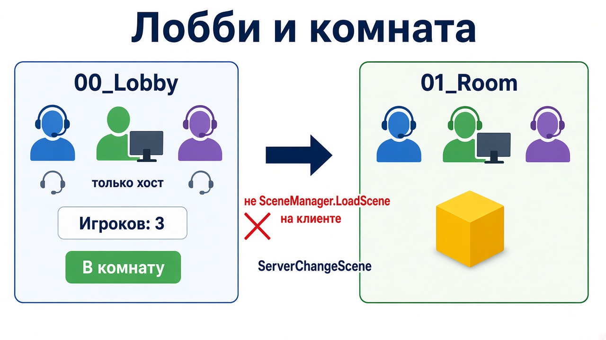

Тетрадь 3 · твой ПК
Лобби — это коридор. Вы уже в одной сети, матч ещё не начался. В уровень всех выпускает сервер, одной сменой сцены.
Ниже восемь вопросов. Под каждым сразу написан ответ.
Ответ
Задачи лобби: увидеть, кто здесь; не начинать матч в одиночку; дать момент старта.
Это не калибровка и не меню до кнопки Host. Пока соединения нет, общей комнаты нет. Есть только твой локальный экран.
Два рабочих варианта:
LobbyRoster считает людей через SyncVar. Кнопка «В комнату» есть только у хоста. ServerChangeScene грузит 01_Room всем.NetworkRoomManager и префаб с NetworkRoomPlayer. Слоты, минимум игроков, флаг «готов», сцена комнаты и сцена игры. В наследнике методы называй OnRoom..., не подменяй обычные OnServer... менеджера: так затирается логика комнаты.Стартер штатную комнату не использует. Если хватает счётчика и кнопки хоста — делай как стартер. Если нужно «все нажали Готов» — бери NetworkRoomManager, не прикручивай галочки к чужому экрану.

Ответ
ServerChangeScene переключает тех, кто уже подключён, и запоминает имя сцены. Опоздавший загрузит комнату, а не пустое лобби.
SceneManager.LoadScene на шлеме этого не делает. Шлем уходит в свою копию комнаты, хост остаётся в лобби. Это уже два разных мира.
В штатной комнате человека два префаба. В коридоре — лёгкий слот: имя и ready. В уровне — тело с руками. Создание тела: OnRoomServerCreateGamePlayer(conn, roomPlayer). Старые примеры без roomPlayer устарели.
В стартере и в лобби, и в комнате игрока создаёт OnServerAddPlayer. Для первой своей игры так проще.
Кнопка в стартере видна, только пока NetworkServer.active. На чистом клиенте сервера нет, кнопки нет. Счётчик — одно поле playerCount, не текст, который каждый пишет у себя.
Ready имеет смысл, когда старт не единоличный. Сервер проверяет: все готовы и людей не меньше минимума, потом меняет сцену. Галочка только на клиенте — картинка.
Ответ
LobbyHud, LobbyRoster, SmenaNetworkManager.Ответ
Своя комната:
ServerChangeScene, не через LoadScene.Штатная комната:
NetworkRoomManager. Второй менеджер рядом не вешай.RoomScene, GameplayScene, roomPlayerPrefab, playerPrefab, minPlayers.NetworkIdentity и NetworkRoomPlayer.OnRoomServerSceneChanged и соседних OnRoom*.Ответ
Ответ
| Что происходит | Где искать |
|---|---|
| У хоста комната, у шлема лобби | клиент загрузил сцену сам |
| Кнопка старта на шлеме ломает всем сцену | нет проверки NetworkServer.active |
| Счётчик врёт | текст локальный, мимо SyncVar |
| Ready нажат, игра не началась | мало людей, не все ready, или ждут и кнопку, и ready без одного правила |
| В лобби дёргается камера | в комнату спавнится полный XR-риг. Нужен лёгкий слот или выключенный чужой риг |
| После старта нет тела | пустой playerPrefab или нет точки спавна |
| Два менеджера | оставили NetworkManager и добавили NetworkRoomManager |
Ответ
Ответ